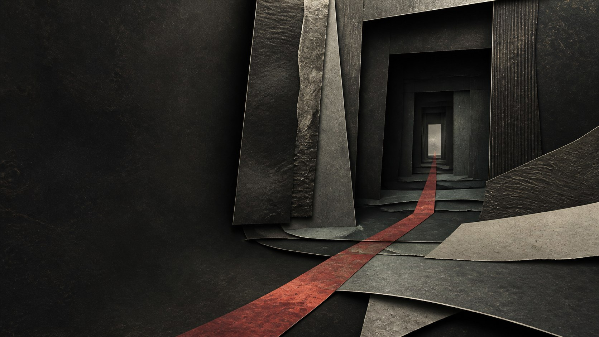

The Chinese Underworld · Featured Entry
钟馗
Zhong Kui, the Demon Queller
A source-bounded introduction to a famous demon-quelling identity, the questions still open, and a modern adaptation that cannot stand in for tradition.
Start with the quick answerInvented threshold atmosphere, not a portrait of Zhong Kui or evidence for a historical setting. Mythic China prototype, AI-assisted original illustration.
On this page
Quick answer
Who is Zhong Kui?
Zhong Kui is introduced here as a demon-quelling figure, not as the ruler of one fixed Chinese underworld. The Met catalogues a work under the title Zhong Kui, the Demon Queller with Five Bats, which supports the English identity used by this prototype. Mythic China places him “At the Threshold” as an editorial route into stories of ghosts and protection. That placement is not a historical office.
Story entry
At the threshold
A name can open a door without explaining everything behind it. Zhong Kui arrives in this prototype through a precise museum title: “the Demon Queller.”1 That is enough to establish the identity used on this page. It is not enough to settle a universal origin story, one permanent office, or every later version.
The Collection therefore uses Zhong Kui as a featured point of entry. Readers can move from a recognizable figure toward larger questions about ghosts, protection, judgment, and the many ways an underworld has been imagined. Featured means editorially prominent. It does not mean ruler, chief judge, or member of the Ten Kings.
Claim boundary: the museum record supports the title used here. The position “At the Threshold” is Mythic China's curatorial label and must not be read as a traditional rank.
Evidence layer
What the record says
The Met's collection page names an artwork Zhong Kui, the Demon Queller with Five Bats.1 In M1, that title is the narrow evidence for “Demon Queller.” The prototype does not expand the record into unsupported biography.
A separate Columbia teaching resource describes a bureaucratic underworld centered on ten magistrates, judgment, punishment, and rebirth.2 It is used here to keep systems apart: Zhong Kui is not presented as one of those ten magistrates.
Production gate: claims about earliest texts, origin episodes, titles, worship, regional practice, or historical development need specific texts, editions, objects, and scholarship before publication.
Open research
Later traditions and variants
This section stays deliberately narrow. The prototype has not yet completed the text-level research needed to compare later literary, visual, religious, and local versions. It therefore does not merge them into a smooth origin narrative.
When the production article is researched, each version must name its source and context. Differences should remain visible rather than being silently reconciled. A role found in one text cannot be projected across every period or community.
Mythic China layer
Our interpretation
“At the Threshold” is an editorial device. It places a demon-quelling figure where the Collection moves from ordinary space toward ghost stories and imagined underworlds. The dark mineral image creates atmosphere, but it is invented and carries no factual claim.
This split between evidence and interpretation is part of the reading design. The factual basis sits close to the sentence it supports. Visual and curatorial choices identify themselves as choices.
Reader value
Why this figure matters here
Zhong Kui tests whether Mythic China can welcome readers through a compelling figure without turning recognition into certainty. The page should make the supported identity easy to remember while leaving research gaps honest and actionable.
He also reveals the Collection's boundary. Stories of ghosts and protection can meet stories of judgment and rebirth, but proximity does not make every figure part of the same administration.
Contemporary attention
Modern adaptations
Game Science maintains an official page for Black Myth: Zhong Kui.3 Its presence helps explain why readers may be looking for Zhong Kui in 2026. It is evidence about that modern adaptation and its public attention only.
Mythic China does not use the game's character design, tiger, logo, screenshots, calligraphy, palette, camera composition, code, or brand language. The adaptation cannot be used to prove ancient, religious, literary, or folk claims.
Complete bibliography
Sources
-
The Metropolitan Museum of Art: Zhong Kui, the Demon Queller with Five Bats
Object record. Used narrowly for the English “Demon Queller” identity. Accessed 27 August 2026.
Return to first claim -
Columbia University: Ten Magistrates of the Underworld
Teaching resource. Used to distinguish the Ten Magistrates system from Zhong Kui's featured placement. Accessed 27 August 2026.
Return to claim -
Game Science: Black Myth: Zhong Kui
Official adaptation page. Used only for modern adaptation and current-attention context. Accessed 27 August 2026.
Return to claim
Reader Request
What should we clarify next?
Suggest one question or source lead in 240 characters or fewer. This local prototype sends and stores nothing.